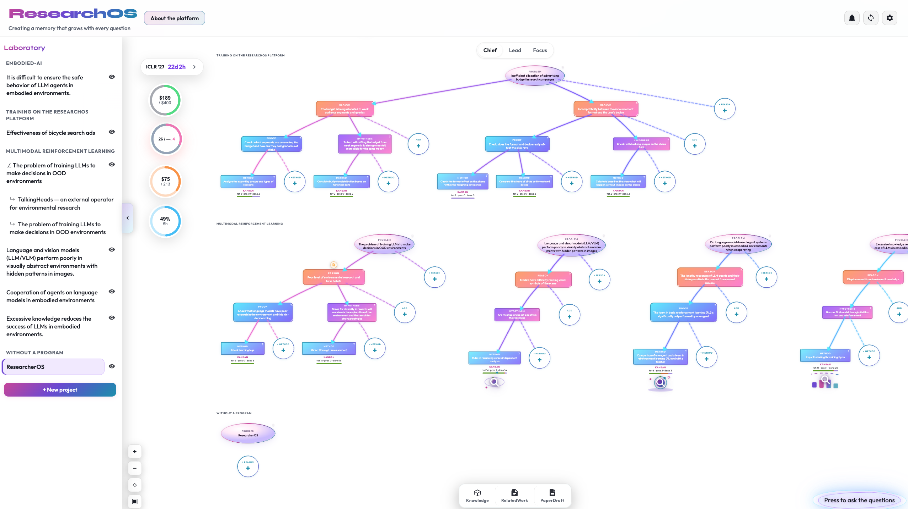

Как устроен ResearcherOS
ResearcherOS связывает гипотезы, эксперименты, отчёты, накопленные знания и текст статьи в состояние одного исследовательского проекта. Это состояние хранится в Research Project независимо от интерфейса: локальное приложение читает и изменяет его, агенты работают с теми же материалами, а Hub публикует снимки для просмотра. Код экспериментов остаётся отдельно. Для разных типов совместной работы используются разные механизмы: Git сохраняет долговременную историю, обработка отчётов превращает результаты запусков в исследовательские выводы, а отдельный канал поддерживает одновременное редактирование статьи.

Архитектура в трёх слоях
ResearcherOS разделяет хранимое состояние исследования, локальные инструменты работы и опубликованные представления. Поэтому проект не зависит от одного интерфейса, а публикация не даёт Hub права изменять исходные материалы.
Состояние исследования
Дерево гипотез, канбан экспериментов, отчёты, знания, статья, сценарии агента и виджеты хранятся в файлах проекта. Код экспериментов находится отдельно.
Локальный ResearcherOS
Веб-клиент и локальный API читают и изменяют файлы Research Project. Они предоставляют дерево, канбан, монитор, базу знаний, Related Work, Research Chat, PaperDraft и проектные виджеты.
ResearcherOS Hub
Hub публикует снимки проектов как представления только для чтения. Он показывает состояние исследования, но не заменяет локальный проект и не становится источником истины.
Общая схема
На схеме показаны два исследователя с отдельными локальными копиями проекта, удалённый Git-репозиторий, канал совместного редактирования статьи и Hub. Эти связи решают разные задачи и не образуют единую универсальную синхронизацию.
Как читать схему. Исследователи A и B работают со своими локальными копиями Research Project. Если для проекта включена Git-синхронизация, обмен долговременным состоянием идёт через общий удалённый репозиторий. Hub показывает опубликованный снимок только для чтения. Совместное редактирование передаёт изменения открытой статьи, но не создаёт коммиты и не заменяет историю в Git.
Research Project: источник исследовательского состояния
Research Project — это набор файлов, а не отдельный сервер или база данных. В них ResearcherOS хранит путь от исследовательской проблемы к накопленному знанию:
проблема → причины → гипотезы → методы проверки → эксперименты → отчёты → вердикты и выводы
Код экспериментов находится в соседнем каталоге и может развиваться по правилам команды. Рекомендуемая схема размещения исследовательских материалов — tree/<repo>/koi-structure/. ResearcherOS обнаруживает такой каталог по маркеру project.md.
├── project.md ← дерево гипотез и канбан методов
├── research.json ← исследовательские вопросы и выводы по методам
├── knowledge/ ← курируемые заметки
├── reports/ ← отчёты по экспериментам
├── paper/ ← материалы и LaTeX-исходники статьи
├── skills/ ← сценарии агента этого проекта
└── widgets/ ← виджеты этого проекта
Основные связи исследования задаёт project.md: гипотеза ведёт к методу проверки, а канбан экспериментов относится к конкретному методу. Отчёты и структурированные выводы дополняют эту модель, но журнал отдельного запуска сам по себе не становится исследовательским знанием.
Хранилище остаётся раздельным и для составных проектов. ResearcherOS может объединить несколько проектов в одно представление при чтении, однако исходные данные продолжают храниться в своих репозиториях. Составной проект — это слой представления, а не новое общее хранилище.
Локальный проект и проект с Git-синхронизацией
Git не обязателен для работы ResearcherOS. Проект может оставаться локальным: приложение продолжит читать и изменять его файлы, но обмен через Git выполняться не будет.
Для участия в Git-синхронизации в метаданных project.md указывают git_repo: true, а корень проекта должен принадлежать Git-репозиторию. В рекомендуемой схеме исследовательские материалы подключаются отдельным рабочим деревом Git (worktree) на ветке koi/research, тогда как код остаётся в соседнем каталоге.
Команды подключения и обмена состоянием:
python -m koi.projects.install_cli install <имя>
python -m koi.projects.install_cli install <имя> --create
python -m koi.projects.sync_cli push --project-id <project-id>
python -m koi.projects.sync_cli pull --project-id <project-id>
install подключает существующий проект, а вариант с --create создаёт новый. При push ResearcherOS копирует актуальный koi-structure в рабочее дерево синхронизации, добавляет изменения в индекс Git, создаёт коммит и отправляет ветку в удалённый репозиторий. Перед pull система проверяет исследовательское рабочее дерево и блокирует получение изменений, если в нём уже есть незакоммиченные изменения.
Локальное служебное состояние среды выполнения хранится отдельно, в .run/ репозитория движка ResearcherOS. Оно не входит в Research Project и не переносится как состояние исследования.
Локальный ResearcherOS: работа с проектом
Локальный ResearcherOS состоит из веб-клиента и FastAPI-сервера на машине пользователя. Сервер предоставляет API над подключёнными проектами, а клиент показывает их содержимое через исследовательское дерево, канбан и граф зависимостей, монитор активной карточки, базу знаний, Related Work, Research Chat, PaperDraft и виджеты.
Эти представления работают с одним состоянием. Эксперимент относится к методу из дерева, отчёт может изменить вердикт гипотезы и добавить структурированные выводы, а накопленное знание становится контекстом для дальнейшего анализа и статьи.
Агент в редакторе кода может работать с теми же файлами. Сценарии агента задают повторяемый порядок действий, но не создают отдельное хранилище поверх Research Project.
Короткая техническая деталь: разрешение путей подключённых проектов внутри сервера проходит через ProjectMount, чтобы локальный API одинаково работал с рекомендуемой и поддерживаемыми устаревшими схемами каталогов.
Hub: опубликованное представление
ResearcherOS Hub хранит и показывает снимки зарегистрированных проектов только для чтения. По умолчанию источником служит ветка koi/research, но при регистрации можно выбрать другую существующую ветку репозитория. Последующие снимки строятся из выбранной ветки.
Изменения продолжают выполняться в локальной копии Research Project. Hub не предоставляет редактирование опубликованного представления и не становится источником истины.
Доступность снимка определяется режимом видимости: public, network или unlisted. Публикация общих сценариев агента имеет дополнительные условия: сценарий из koi-structure/skills/ попадает в общий каталог только при синхронизации включённого публичного проекта и при собственной видимости public. Непубличный проект не публикует сценарии независимо от их локальных манифестов.
Общий каталог виджетов описан только как направление развития Hub и не является реализованным каналом публикации.
Три механизма согласования состояния
Три механизма ResearcherOS отличаются носителем и критерием сохранённого результата. Git переносит версию файлов между копиями, обработка отчёта вводит результат запуска в исследовательскую модель, а совместное редактирование поддерживает оперативное состояние открытой статьи.
1. Git: долговременная история проекта
Git хранит версионную историю файлов Research Project и переносит её между локальными копиями. Этот контур охватывает дерево, канбан, отчёты, знания, статью, сценарии агента и виджеты, если они находятся в синхронизируемой исследовательской ветке.
Команда push подготавливает и отправляет новый коммит автоматически. Команда pull получает удалённое состояние только при чистом локальном рабочем дереве исследования. Для проекта без git_repo: true этот контур не используется.
2. Обработка результата: от запуска к исследовательскому выводу
ResearcherOS не унифицирует среду выполнения эксперимента: запуск может происходить в локальном скрипте, на кластере или во внешней платформе. Система унифицирует способы, которыми результат входит в Research Project.
Первый путь — явная обработка отчёта через report_ingest. Агент или другой вызывающий процесс передаёт отчёт с корректно оформленным разделом §5; обработчик извлекает из него вердикт и выводы и записывает их в структурированное состояние исследования.
Второй путь начинается, когда пользователь или агент переводит карточку в состояние «готово» (done). ResearcherOS помещает такую карточку в очередь обработки завершённых экспериментов, только если для неё ещё нет связанного исследовательского вывода. Затем агент читает материалы карточки и формулирует вывод. Карточка, уже обработанная через report_ingest, обычно пропускает очередь, поскольку структурированный вывод для неё уже записан. Само перемещение карточки не создаёт курируемую заметку автоматически.
При сохранении проекта save_project пересобирает производные файлы KNOWLEDGE.md и knowledge/hypotheses.md. Остальные материалы в knowledge/*.md остаются курируемыми заметками: ResearcherOS не создаёт отдельную такую заметку из каждого отчёта.
Таким образом, завершённый вычислительный запуск и оформленное знание — разные состояния. Если проект синхронизируется через Git, передача записанного результата на другую машину происходит уже через Git-контур.
3. Совместное редактирование статьи: оперативный обмен текстом
PaperDraft использует Yjs и CRDT — модель данных, которая согласует параллельные изменения совместного документа. Поддерживается работа не более пяти участников.
Фактический транспорт зависит от конфигурации. В режиме только серверной ретрансляции (relay-only) изменения документа, комментарии и служебные CRDT-сообщения идут через службу согласования соединений (signaling) — сервер, который поддерживает соединение участников и пересылает сообщения между ними. Такая пересылка называется ретрансляцией. В конфигурации без режима серверной ретрансляции ResearcherOS может использовать прямые WebRTC DataChannel между браузерами, а служба согласования помогает участникам установить эти соединения.
Для обычной CRDT-синхронизации участникам нужны совместимый Git-коммит и одна эпоха CRDT. При несовместимости транспорт через ретрансляцию может перейти к передаче снимка TeX и повторной синхронизации вместо прямого объединения CRDT-историй. Независимо созданные истории Yjs напрямую не сливаются, поскольку это может продублировать исходный текст.
В режиме серверной ретрансляции есть существенное ограничение: текущий путь пересылки не гарантирует строгую изоляцию участников комнаты по HEAD. Поэтому совпадение базовой версии Git остаётся необходимым условием командной работы, но его нельзя считать полной транспортной границей безопасности в этом режиме.
Совместное редактирование не создаёт Git-коммиты. Долговременной контрольной точкой остаются файлы статьи в Git. Для подключения участники используют согласованные параметры службы согласования и совместимую конфигурацию; сетевые и проверочные условия описаны в docs/paper-collaboration-spike-b.md.
Предложения внешних правок
Механизм предложений действует внутри активной сессии совместного редактирования. Когда интеграция с буфером внешнего редактора передаёт изменённый текст в такую сессию, ResearcherOS создаёт ожидающее решения предложение. Пользователь может принять или отклонить его целиком либо разрешить отдельные фрагменты. До этого решения внешняя правка не применяется к основному тексту статьи.
Как связаны механизмы
У каждого контура своя граница сохранности:
- Git отвечает за воспроизводимую версию файлов и обмен между локальными копиями.
- Обработка отчёта определяет, когда запуск становится структурированным исследовательским результатом.
- Yjs поддерживает оперативное состояние открытой статьи через доступный транспорт.
- Hub публикует снимок сформированного состояния и не участвует в его редактировании.
Поэтому текст, появившийся у другого участника в PaperDraft, ещё не является долговременной версией в Git. Аналогично, завершённый запуск ещё не становится исследовательским выводом, пока явный обработчик или агент не оформит его в состоянии проекта.
Каталог локальных возможностей
Следующие страницы описывают продуктовую модель, работу пользователя, действия агента, хранение состояния и технические границы каждой возможности.
Исследовательское дерево
Узлы исследования, вердикты, структура project.md и связь метода с канбаном.
Канбан экспериментов
Состояния карточек, зависимости между экспериментами и отчёты.
03Монитор прогона
Текущее состояние, логи, метрики и графики активного эксперимента.
04База знаний
Структурированные выводы в research.json, производные сводки и курируемые заметки в knowledge/.
Research Chat
Вопросы к накопленному контексту проекта и ответы в локальном интерфейсе.
06Related Work
Работа с локальной библиотекой, arXiv и Zotero; группировка публикаций и подготовка обзора.
07PaperDraft
LaTeX, предложения внешних правок, совместное редактирование через Yjs и сохранение статьи в Git.
08Виджеты
Проектные панели, которые используют локальный API ResearcherOS.